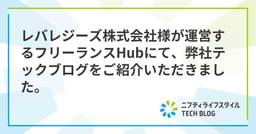

ニフティライフスタイル Tech Blog
https://tech.niftylifestyle.co.jp
ニフティライフスタイルを支えるエンジニア達が、日々の業務や自己研鑽から得られたノウハウや技術的な知見などについてお伝えしていきます。…
フィード

レバレジーズ株式会社様が運営するフリーランスHubにて、弊社テックブログをご紹介いただきました。
ニフティライフスタイル Tech Blog
レバレジーズ株式会社様が運営するフリーランスHubにて、弊社をご紹介いただきました！ 弊社以外にも様々な情報発信をされているブログ・メディア様をご紹介いただいております。 記事は以下よりご覧ください。 フリーランスHub […]
3日前

iOSDC Japan 2025 に参加しました！
ニフティライフスタイル Tech Blog
はじめに 「ニフティ不動産」アプリのiOS開発を担当している、ryu-kobayashiです。 先日（9月19日〜9月21日）開催された、iOS関連技術をコアのテーマとした、ソフトウェア技術者のためのカンファレンス「iO […]
25日前
2025/9/24 AWS GameDay参加レポート
ニフティライフスタイル Tech Blog
はじめに こんにちはこんばんは。 ニフティライフスタイルでエンジニアをしている、kota_sasakiです。 先日開催されたAWS Gameday（テーマ：生成AI）に同僚のsaikeiさんと参加してきたので、体験レポー […]
2ヶ月前
ニフティ温泉のWEBサイト開発についての紹介
ニフティライフスタイル Tech Blog
こんにちは。システム開発部のsonohaです。ニフティ温泉のWEBサイトの開発全般を担当しています。 ニフティライフスタイルでは、エンジニアがさまざまな技術スタックや手法を活用しながら日々の開発に取り組んでいます。このテ […]
8ヶ月前
ニフティ不動産のWEBサイト開発についての紹介
ニフティライフスタイル Tech Blog
こんにちは！エンジニア採用担当の松居です。 ニフティライフスタイルでは、エンジニアがさまざまな技術スタックや手法を活用しながら日々の開発に取り組んでいます。このテックブログでも、その取り組みを随時ご紹介していきたいと考え […]
10ヶ月前
初参加でも大丈夫。 ISUCON14体験談
ニフティライフスタイル Tech Blog
はじめに みなさん、こんにちは。私は普段、ニフティライフスタイルで不動産サービスの開発をしています。先日初めてISUCON14というテックコンテストに参加してきました。 そもそもテックコンテストが人生初だったのでかなり不 […]
1年前
Kotlin MultiplatformとVoyagerを使った画面遷移
ニフティライフスタイル Tech Blog
はじめに こんにちは。「ニフティ不動産」アプリの開発を担当している、TS-Elfenです。今回はVoyagerを使った、マルチプラットフォームアプリの画面遷移の実装方法について紹介したいと思います。 Kotlin Mul […]
1年前
AWS Step Functionsで新たにサポートされたJSONataを使ってみた！
ニフティライフスタイル Tech Blog
はじめに こんにちは！ニフティライフスタイルで不動産サービスの開発をしているsaikeiです！ 少し前までモバイルアプリの開発をメインで行っていたのですが、最近はAWSを用いたバックエンド側の開発にも携わっています。 今 […]
1年前
iPadOS 18以降のUITabBarControllerでのレイアウト問題に対応してみた
ニフティライフスタイル Tech Blog
はじめに こんにちは。システム開発部のryu_kobayashiです。普段は「ニフティ不動産」のiOSアプリの開発を担当しています。 先日、弊社から提供している「ニフティ不動産アプリ 賃貸版」にてXcode 16へ対応し […]
1年前
AWS Lambdaを使わずStep Functionsだけでシステムを構築するメリット・デメリット
ニフティライフスタイル Tech Blog
こんにちは。システム開発部 スペシャリストのkiwiです。 弊社では数年前から、AWSのマネージドサービスを活用したサーバーレス構成でシステムを構築しています。APIのバックエンドなどの軽量な処理にはAWS Lambda […]
1年前